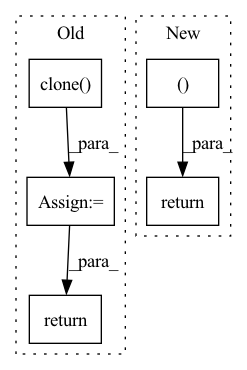

Pattern ID :1899
Before Change
m, x_rnn, _ = self.erb_stage(feat_erb)
spec = self.mask(spec, m, atten_lim) // [B, 1, T, F, 2]
lsnr, _ = self.lsnr_net(x_rnn)
out_specs = [spec.squeeze(1).clone() for _ in range(len(self.refinement_stages) + 1)]
// re/im into channel axis
spec_f = (
spec.squeeze(1)[:, :, : self.df_bins].permute(0, 3, 1, 2).clone()
) // [B, 2, T, F_df]
h_conv: Optional[Tensor] = None
for i, (stage, _) in enumerate(zip(self.refinement_stages, self.refinement_snr_max)):
refinement, h_conv, _ = stage(self.cplx_comp(spec_f), h_conv)
spec_f = spec_f + refinement
out_specs[i + 1][..., : self.df_bins, :] = spec_f.permute(0, 2, 3, 1)
spec[..., : self.df_bins, :] = spec_f.unsqueeze(-1).transpose(1, -1)
return spec, m, lsnr, out_specs
def init_model(df_state: Optional[DF] = None, run_df: bool = True, train_mask: bool = True):After Change
r, _, _ = self.refinement_stage(self.cplx_comp(spec_f))
spec_f = self.refinement_op(spec_f, r)
spec[..., : self.df_bins, :] = spec_f.unsqueeze(-1).transpose(1, -1)
return spec, m, lsnr, None
def init_model(df_state: Optional[DF] = None, run_df: bool = True, train_mask: bool = True):
assert run_df and train_maskIn pattern: SUPERPATTERN
Frequency: 3
Non-data size: 5
Instances Fragment ID: 13334274
Project Name: rikorose/deepfilternet
Commit Name: 946b362aa406f8a1808a252393351d0e7523130a
Time: 2022-04-12
Author: h.schroeter@pm.me
File Name: DeepFilterNet/df/multistagenet.py
M Class Name: MSNet
N Class Name: MSNet
M Method Name: forward(3)
N Method Name: forward(3)
M Parent Class: nn.Module
N Parent Class: nn.Module
M File Name: DeepFilterNet/df/multistagenet.py
N File Name: DeepFilterNet/df/multistagenet.py
M Start Line: 534
M End Line: 547
N Start Line: 504
N End Line: 510
Before Change
// B = B.reshape(N, 1, ord_num * H * W)
A = A.unsqueeze(dim=1)
B = B.unsqueeze(dim=1)
concat_feats = torch.cat((A, B ), dim=1)
if self.training:
prob = F.log_softmax(concat_feats, dim=1)
ord_prob = x.clone()
ord_prob[:, 0::2, :, :] = prob[:, 0, :, :, :]
ord_prob[:, 1::2, :, :] = prob[:, 1, :, :, :]
return ord_prob
ord_prob = F.softmax(concat_feats, dim=1)[:, 0, ::]
ord_label = torch.sum((ord_prob > 0.5), dim=1).reshape((N, 1, H, W))After Change
x = x.view(-1, 2, ord_num, H, W)
if self.training:
prob = F.log_softmax(x, dim=1).view(N, C, H, W)
return prob
ord_prob = F.softmax(x, dim=1)[:, 0, :, :, :]
ord_label = torch.sum((ord_prob > 0.5), dim=1) Fragment ID: 13334272
Project Name: dontlovebugs/superviseddepthprediction
Commit Name: a29756ee2e089a313d149f6fa3ea441d955e42a0
Time: 2020-05-04
Author: wangxin_buaa@163.com
File Name: dp/modules/decoders/OrdinalRegression.py
M Class Name: OrdinalRegressionLayer
N Class Name: OrdinalRegressionLayer
M Method Name: forward(2)
N Method Name: forward(2)
M Parent Class: nn.Module
N Parent Class: nn.Module
M File Name: dp/modules/decoders/OrdinalRegression.py
N File Name: dp/modules/decoders/OrdinalRegression.py
M Start Line: 28
M End Line: 45
N Start Line: 26
N End Line: 57
Before Change
for encoder in self.encoders:
x = encoder(x, input_mask)
encoder_logit = x.clone()
for decoder in self.decoders:
// target, encoder_output, encoder_mask)
target = decoder(target, x, input_mask)
lm_logits = self.lm_head(x)
loss = None
if labels is not None:
// Shift so that tokens < n predict n
shift_logits = lm_logits[..., :-1, :].contiguous()
shift_labels = labels[..., 1:].contiguous()
// Flatten the tokens
loss_fct = CrossEntropyLoss()
loss = loss_fct(shift_logits.view(-1, shift_logits.size(-1)), shift_labels.view(-1))
return lm_logits, loss, encoder_logit, x
After Change
loss_fct = CrossEntropyLoss()
loss = loss_fct(shift_logits.view(-1, shift_logits.size(-1)), shift_labels.view(-1))
return lm_logits, loss
Fragment ID: 13334276
Project Name: nawnoes/pytorch-meena
Commit Name: d475c52c2ba0c43b75056e0f552fa7ce953b2fdd
Time: 2021-05-04
Author: nawnoes@gmail.com
File Name: model/meena.py
M Class Name: Meena
N Class Name: Meena
M Method Name: forward(4)
N Method Name: forward(4)
M Parent Class: nn.Module
N Parent Class: nn.Module
M File Name: model/meena.py
N File Name: model/meena.py
M Start Line: 55
M End Line: 75
N Start Line: 60
N End Line: 74